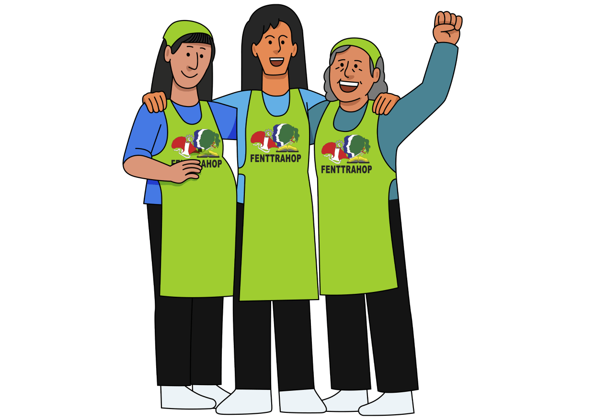
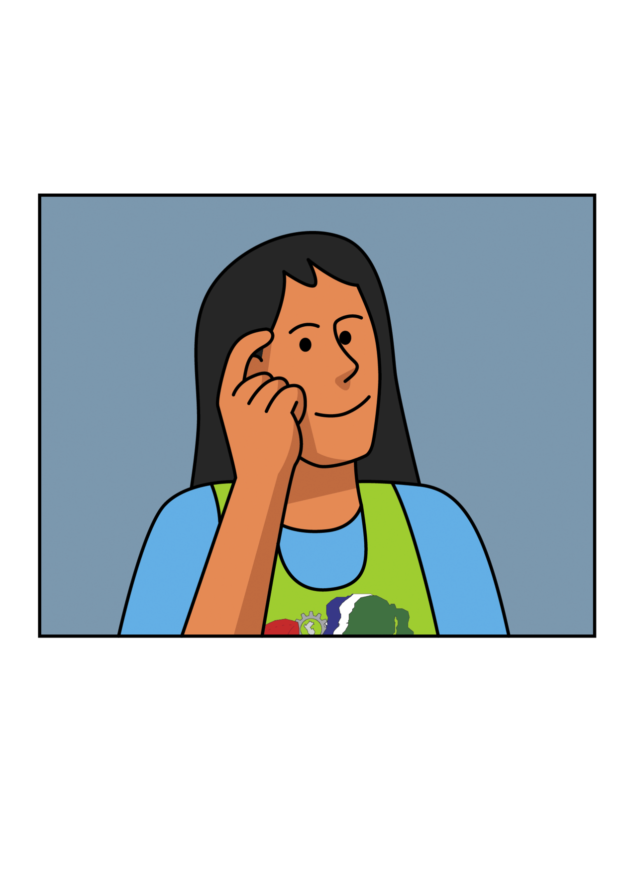
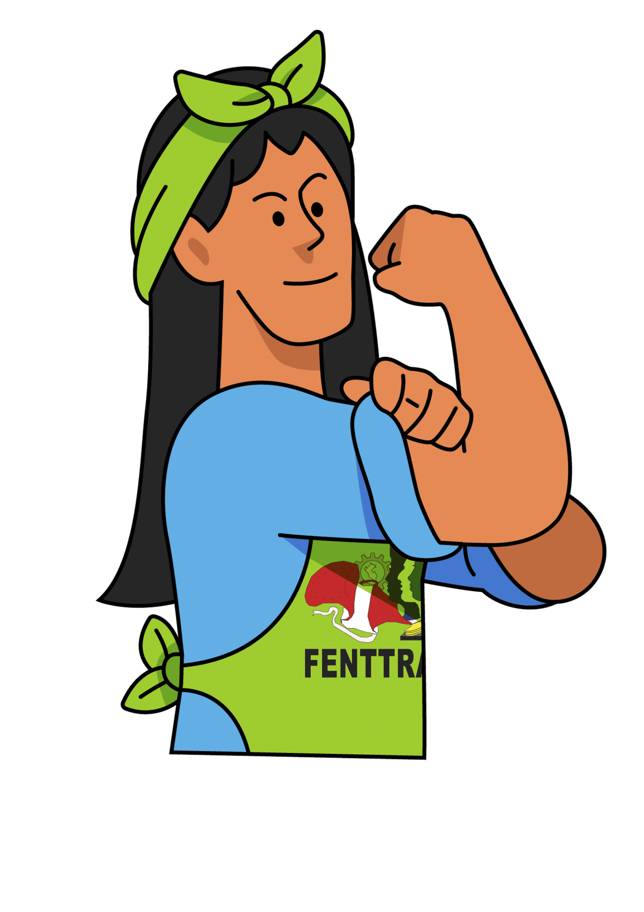

Free AI Website BuilderSomos la Federación Nacional de Trabajadoras y Trabajadores del Hogar del Perú.

Somos la Federación Nacional de Trabajadores y Trabajadoras del Hogar del Perú, una organización sindical nacional que lucha por los derechos económicos, sociales, políticos y culturales de las y los trabajadores del hogar. Con este enfoque, capacitamos a nuestras afiliadas y promovemos nuevos liderazgos en el movimiento sindical. Nos organizamos en defensa de los derechos laborales, con el principio del sindicalismo clasista, con perspectiva de género aportando a un Perú más justo
Nacimos para luchar por los derechos económicos, sociales, políticos y culturales de las y los trabajadores del hogar, a través de la organización sindical a nivel nacional, promoviendo la capacitación y liderazgo de sus afiliadas, practicando el sindicalismo de clase. Promoviendo nuevos líderes dentro del movimiento sindical.
Somos una organización sindical reconocida a nivel nacional e internacional, con capacidad de negociación colectiva y propuesta programática, con enfoque de género, bases fuertes en todo el país, ejerciendo el diálogo social con otros actores, con dirigentes, comprometidas y democráticas.
Ley 31047, Convenio 189 OIT, EsSalud, gratificaciones, CTS, vacaciones y erradicación de la violencia laboral. ¡Unidas somos más fuertes!

Nos organizamos porque las personas trabajadoras del hogar tenemos derecho a la libertad sindical, es decir a afiliarnos a un sindicato, a formar sindicatos y federaciones, al fomento de la negociación colectiva y al respeto del derecho de huelga. Estos derechos deben ser promovidos y protegidos por el Estado.
A través de la organización sindical las trabajadoras del hogar tienen derecho al diálogo con las autoridades y a la participación en instancias de decisión sobre políticas para nuestro sector, como es el caso de la Mesa de Trabajo permanente para Promover el Cumplimiento de Derechos, espacio conformado por el Ministerio de Trabajo, el Ministerio de la Mujer, la SUNAT (Superintendencia Nacional de Administración Tributaria) y la SUNAFIL (Superintendencia Nacional de Fiscalización Laboral)
"El derecho a organizarnos como trabajadoras del hogar es fundamental para la defensa de nuestros derechos"

La historia de la Federación Nacional de Trabajadoras y Trabajadores del Hogar del Perú (FENTTRAHOP) es la historia de un sector históricamente invisibilizado que logró organizarse, reconocerse como sujeto político y conquistar derechos fundamentales en el país.
Durante décadas, el trabajo del hogar fue poco valorado, marcado por la discriminación de género, clase y origen. En ese contexto, las trabajadoras del hogar enfrentaron no solo la precariedad laboral, sino también la negación de su condición como trabajadoras. Antes de conquistar derechos, tuvieron que conquistar reconocimiento.
La FENTTRAHOP ha logrado la victoria sindical más importante en el siglo XXI en el Perú, la ratificación del Convenio 189 de la OIT y la Ley 31047. Una victoria que ha ido de la mano de organización, elaboración de propuesta e incidencia incluso en las condiciones más adversas: crisis políticas, pandemia y la discriminación que también se expresó en altas instancias.
Esta victoria es fundamental porque avanza hacia la igualdad en el Perú, parte por reconocer que el trabajo del hogar, es decir, cocinar, lavar, cuidar es trabajo y merece los mismos derechos que cualquier trabajador. Y tiene un mayor aporte de sentido, porque al reconocer las labores, reconoce que el cuidado es trabajo y esto incluye al no remunerado.
La FENTTRAHOP con su postura de avance, sigue luchando actualmente por el cumplimiento de los derechos de las trabajadoras del hogar y por el reconocimiento del derecho y del trabajo del cuidado a través de un Sistema Nacional de Cuidados. Por eso estratégicamente propone y entabla el diálogo social, a la par del fortalecimiento y crecimiento sindical a nivel nacional, que hoy tiene 14 sindicatos en todo el territorio.
Antes de conquistar derechos, hubo que conquistar el reconocimiento como trabajadoras. Las primeras formas de organización surgieron entre las décadas de 1960 y 1970, cuando hubo un gran desarrollo del movimiento sindical en general, sin embargo, el Estado se negó a reconocer sus sindicatos, evidenciando una discriminación estructural. Durante los años de violencia política, el movimiento continuó debilitado, ya no como sindicatos, si no como asociaciones.
Con el retorno a la democracia, se retomó la lucha. La aprobación de la Ley 27986 en 2003 representó un avance, pero mantuvo un régimen laboral profundamente discriminatorio, por ejemplo no reconocía ni el sueldo mínimo, era una esclavitud moderna. Nuestras antecesoras identificaron la necesidad de retomar el camino sindical con una organización más fuerte, articulada y con capacidad de incidencia.
A partir de 2006, el vínculo con la CGTP y en especial con el Departamento de la Mujer Trabajadora, permitió fortalecer la formación sindical y la articulación nacional. Es así que en 2009 se constituye el sindicato fundador de la federación, el SINTTRAHOL de la región Lima.
En este proceso, las trabajadoras del hogar no solo se organizaron, sino que participaron activamente en el debate internacional que dio lugar al Convenio 189 de la OIT, convenio que reconoce el trabajo del hogar como trabajo con derechos y parte de los principios de igualdad y no discriminación.
Es así que presentaron informes y nuestras primeras dirigentas viajaron al debate desarrollando incidencia, logrando la adopción de este convenio en 2011. Su retorno estuvo marcado con un objetivo claro, iniciar la lucha por la ratiticación del Convenio 189 en el Perú.
Ese mismo año, se consolida una mirada estratégica: no basta con la organización local, es necesario construir un actor nacional. Así, inicia la tarea de constituir y articular sindicatos en diversas regiones del país, levantando a la par la exigencia de la ratificación del Convenio 189 de la OIT.
Organizar a trabajadoras del hogar es una de las tareas sindicales más difíciles —y una de las más estratégicas y necesarias para lograr realmente justicia social.
A partir del 2011 se inició todo un trabajo de constituir sindicatos, viajaron dirigentas, desarrollaron campañas de convocatoria, jornadas de formación sindical, campañas de afiliación, para poder luego inscribir a los sindicatos. Las trabajadoras del hogar tuvieron en varias regiones el apoyo de la CGTP, pero fundamentalemente fue su esfuerzo y el conocimiento del sector.
Con el trabajo sostenido, se constituyeron los primeros sindicatos en Arequipa(2011), Piura(2012) y Callao(2012) que conjuntamente con el de Lima(2009) formaron la Federación Nacional de Trabajadoras y Trabajadores del Hogar del Perú – FENTTRAHOP el 17 de octubre de 2012, afiliada a la CGTP.
Construir sindicatos y hacer la federación nacional FENTTRAHOP es realmente nuestra primera gran victoria, no fue, ni es fácil construir y sostener sindicatos de un sector tan disperso, que trabaja a puerta cerrada en condiciones de explotación, control y discriminación, que provoca que muchas sientan vergüenza, limitando su capacidad de acción.
Durante los años de lucha por la ratificación del Convenio 189, la Federación siguió fortaleciendo su presencia a nivel nacional constituyendo sindicatos en Ica, Callao, Chiclayo, Cajamarca, Arequipa, Trujillo, Tumbes, Tarapoto y Huancayo.
En los años posteriores la Federación sigue creciendo, incluso con una mirada más profunda sobre el trabajo del cuidado, por lo que los nuevos sindicatos incluyen a trabajadoras del hogar remuneradas y no remuneradas, como ocurre con los sindicatos de Lima Metropolitana, Iquitos, Cajamarca(reactualizado) y Chincha.
Constituir la federación nacional fue un factor clave, porque las trabajadoras del hogar ya contabamos con una organización sindical nacional que las defienda y represente frente al gobierno y el Congreso.
Para ratificar el Convenio 189 de la OIT corrieron siete años de lucha sostenida, desde el primer sindicato hasta la formación y consolidación de la Federación. La FENTTRAHOP presentó oficios, marchas, foros, conferencias de prensa, campañas para exigir a los gobiernos de Humala, Kuczynski y Vizcarra y a los respectivos congresos ratifiquen el convenio.
La Federación hizo todo un despliegue de sus bases sindicales, concentrando acciones para exigir que cumplan sus compromisos, a la par desarrolló todo una estructura de alianzas con congresistas de diversas bancadas, acercandose a las comisiones de Relaciones Exteriores y la Comisión de Trabajo para lograr que el Convenio 189 pase a la agenda del Pleno del Congreso.
En 2018, en plena crisis política, a solo tres meses de la renuncia de Kuczynski, con un congreso que había caído en su aprobación, la Federación buscó el apoyo de las diversas bancadas y logró que por unanimidad se apruebe la ratificación el 14 de junio de 2018.
Todo este proceso fue posible no solo por la acción directa, la Federación siempre apostó por el fortalecimiento interno, la formación, capacitación, planificación y el intercambio de experiencias a nivel nacional e internacional, como cuando organizó un Encuentro con representantes de Colombia, Ecuador, Uruguay y Bolivia para enriquecer la estrategia hacia la ratificación. En estos años fue fundamental también el acompañamiento de nuestra CGTP y de la OIT.
La ratificación del Convenio 189 de la OIT es la victoria sindical más importante del siglo XXI en el Perú. Tiene un significado revolucionario, reconoce que el trabajo del hogar es trabajo y que merece los mismos derechos. Además por extensión al reconocer las labores, reconoce el trabajo de millones de mujeres en sus hogares, aún cuando no sea remunerado y esto es un precedente importantísimo para el reconocimiento del trabajo del cuidado.
Este logro destaca frente a otros porque no es resistencia, como ocurrió con la gesta contra la llamada “Ley pulpín”, ratificar el Convenio 189 involucró conquistar derechos, avanzar a la igualdad y reconocer el valor del trabajo del hogar en la sociedad.
Luego de ratificado el Convenio 189 de la OIT, que como norma internacional tiene rango constitucional, continuaba la fase de la implementación, es decir el deber del Estado de la creación de nueva normativa, adecuaciones y políticas para que se garanticen los derechos reconocidos. El plazo para la implementación era de doce meses desde la fecha que el Estado Peruano informó a la OIT (26/11/2018), posterior a ello entraba en vigencia.
Es por ello que el mismo 2018 la FENTTRAHOP inició la lucha por una nueva ley con derechos completos, acorde al Convenio 189; para ello desarrollamos una propuesta, tuvimos un foro con todas nuestras bases y bajo la dinámica “¿Qué harías si fueras Ministra de Trabajo?” colocamos punto por punto nuestra propuesta de ley, de la mano de especialistas, y el acompañamiento de la OIT.
Presentamos nuestra propuesta de Ley, que además recogía los proyectos de ley de diversas bancadas, ante la Comisión de Trabajo y la Comisión de la Mujer del Congreso en 2019 tuvimos un arduo trabajo de coordinación con las presidencias, equipos técnicos, congresistas de dichas comisiones.
Nuevamente no solo fue enviar oficios, fue establecer reuniones con congresistas solicitandoles su apoyo y su voto, movilizarnos con nuestra “campaña de la olla”, con nuestros carteles en la calle y dentro del Congreso, fotografiando cada incidencia, a cada congresista con nuestro cartel de la nueva ley. Desarrollamos a la par una estrategia de comunicación en redes sociales, informar a los medios de comunicación y la incidencia nacional porque nuestros sindicatos buscaban a los congresistas en sus regiones en la semana de representación.
Es con ese trabajo sostenido que logramos en 2019 la aprobación del predictamen en la Comisión de la Mujer y la discusión en la agenda de la Comisión de Trabajo, cuya votación no se pudo concretar porque a fines de setiembre, agudizada la crisis, el presidente Vizcarra cerró el Congreso.
Nuevamente la crisis política, amerito cambio de estrategias frente a las nuevas elecciones. La FENTTRAHOP hizo incidencia nacional para comprometer a los candidatos en Lima y en regiones, tejiendo redes que darían soporte en el nuevo Congreso.
Con el nuevo Congreso partimos del dictamen aprobado en la Comisión de la Mujer, que presentamos a la Comisión de Trabajo que debía continuar el proceso, reforzando el deber de la implementación del Convenio189 que la crisis retrasó.
En 2020 fue un año crítico de pandemia, que golpeó fuertemente a nuestro sector: despidos, encierros de trabajadoras del hogar, sobrecarga laboral. De otro lado la cuarentena dificultó la posibilidad de articularnos a nivel presencial, por lo que tuvimos que renovar mecanismos, establecimos reuniones virtuales de planificación, capacitación e incidencia virtual con redes, tuitazos y con entrevistas en medios. Decíamos nuestra lucha no está en cuarentena y cada sindicato en el Perú, hacía sus campañas, fotos, videos, cacerolazos y la incidencia en semanas de representación.
La Federación logró hablar con todas las bancadas, y se expresaron todas nuestras voces de regiones a traves de las reuniones virtuales. Logramos en coordinación con la Comisión de la Mujer y reuniondonos con el Presidente del Congreso y por presión de algunas bancadas colocar en agenda del Pleno del Congreso la nueva ley de trabajadoras del hogar, el 5 de setiembre de 2020 en el denominado “Pleno Mujer” donde logramos la aprobación.
Fue nuestra segunda gran victoria sindical, que terminamos de concretar tras nuestra campaña #VizcarraFirmaAquí para que el presidente Martín Vizcarra promulgue la Ley 31047, que lo hizo en conferencia de prensa y que luego de publicada en El Peruano entró en vigencia el 02 de octubre de 2020.
Fue una emoción muy grande lograr la Ley 31047, fruto de nuestra propuesta e incidencia sostenida a nivel nacional, una ley que reconoce nuestros derechos completos y hoy es ejemplo en norma y proceso para otros países de América Latina y el mundo.
La Federación ha sostenido que la existencia de la Ley 31047, no es suficiente, los derechos deben hacerse efectivos y eso involucra continuar con una serie de medidas a nivel nacional y regional, que pasa por reglamentación, espacios de diálogo social y medidas para enfrentar la informalidad en el sector que llega al 95% y que un 83% de empleadores prácticamente desconoce la ley, de igual forma un 90% de las trabajadoras.
La FENTTRAHOP impulsó el proceso de reglamentación de la Ley 31047, nuevamente con propuesta y un cronograma de diálogo, el reglamento se concretó en 2021. De otro lado exigió la instalación de la Mesa Intersectorial Nacional de Promoción de los Derechos de las Trabajadoras y Trabajadores del Hogar, que incluye a los Ministerios de Trabajo, de la Mujer, SUNAFIL, SUNAT y las organización sindical, este proceso nos llevó varios meses desde solicitar al gobierno de Francisco Sagasti, hasta recién concretarse en el gobierno de Pedro Castillo, instalandose en noviembre de 2021.
La Mesa intersectorial nacional tiene la labor fundamental de velar por el cumplimiento de la Ley 31047, planificar acciones y medidas para ello, aunque su frecuencia es mensual, las crisis políticas, cambios en ministerios y autoridades ha afectado por periodos su regularidad.
Al cierre del año 2021 también concretamos conjuntamente con el Ministerio de la Mujer “Lineamientos para la prevención y atención de la violencia hacia las trabajadoras dl hoga” que permité que las trabajadoras del hogar que sufran violencia en sus centros de trabajo, hogares, puedan ser atendidas por los Centro de Emergencia Mujer.
De otro lado para la Federación para el cumplimiento es fundamental el dialogo regional , porque la precariedad laboral, e informalidad se agrava en regiones fuera de Lima. Es por ello que nuestros sindicatos han ido desarrollando reuniones con autoridades, ejecutando capacitaciones, campañas. Destacamos los logros sindicales locales como son la instalación de mesas de diálogo con SUNAFIL en Ica, Tumbes, Piura, Lambayeque y Trujillo.
Actualmente, la FENTTRAHOP impulsa una nueva etapa: la lucha por el reconocimiento del derecho y del trabajo del cuidado. El trabajo del cuidado sostiene la vida de las personas y aporta a la economía del país, más del 20% del PBI es el trabajo del hogar no remunerado(INEI 2016). Sin embargo es distribuido de manera desigual y muchas veces no se reconoce como trabajo colocando a miles de mujeres en condiciones de alta vulnerabilidad.
La pandemia, visibilizó la importancia de los cuidados y lo crítico que puede ser, años posteriores han surgido proyectos de sistemas de cuidados, pero que han sido desestimados, por resistencias de sectores conservadores
La FENTTRAHOP siempre ha agitado el reconocimiento del trabajo del cuidado y esta vez da un paso mayor al plantear un Sistema Nacional de Cuidados que ponga en el centro el derecho al cuidado en sus tres dimenciones: recibir cuidados, brindar cuidados y el autocuidado, así como el reconocimiento del trabajo del cuidado remunerado y no remunerado.
La FENTTRAHOP, participa en la Red Nacional por los Cuidados en el Perú desde el 2023 y en 2026 ha anunciado en foro público con organizaciones sociales que alistamos propuesta legislativa de Sistema Nacional de Cuidados y ha iniciado la campaña “Manos que sostienen la vida”.
Nuestro trabajo en materia de cuidado incluye formación, presentación de propuesta y articulación nacional a través de la Federación y los sindicatos en regiones que se coordinan con otras organizaciones.
Hoy, la FENTTRAHOP es un actor sindical con legitimidad política, capacidad de propuesta y una trayectoria de conquistas que la posicionan como referente en la defensa de derechos laborales y sociales.
Su historia demuestra que la organización de las trabajadoras del hogar no solo transforma sus condiciones de vida, sino también redefine el valor del trabajo y el cuidado en la sociedad.
Free AI Website Builder